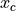
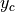
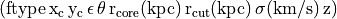
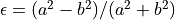
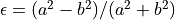
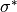
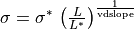
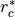
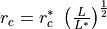

potfile
Under this identifier are defined the default parameters for all the galaxy scale mass components that account for perturbations to the cluster potential by the galaxies. By default, the mass distribution model for the galaxies is PIEMD.
filein int filename
If int = 1 or 3 the galaxy catalog format is .
If int = 3,  and  are given in degrees in the equatorial coordinates.
If int = 1, and are given in arcseconds relative to the reference point given in the runmode section.
Note that the keyword #REFERENCE in the header of the catalog overrides this behavior in all cases.
If int = 2, the galaxy catalog format is .
The ellipticity  parameter is linked to and
parameter is linked to and  by :  . The ellipticity ε of the galaxies is then computed again according to their potential type ([type]).
by :  . The ellipticity ε of the galaxies is then computed again according to their potential type ([type]).
type int
All the galaxies have the same mass profile set by int. Default value is 81, i.e. PIEMD potential.
In the current version, the last column in the catalog (Luminosity) is not used. The dynamical parameters of the potfile galaxies are scaled with the scaling relations described below.
mag0 float
float is the parameter of the reference galaxy for the scaling relations below. It can be in absolute or in relative magnitudes according to the magnitude you give in your potfile. default value is 17 mag.
zlens float
All the galaxies with no specified redshift (Catalog format 3) have the same redshift float. This is used to compute the diameter angular distance.
sigma int float1 float2
float1 is  in km/s. The velocity dispersion of the galaxies is given by 
In the inverse 3 bayesian optimisation method, int can be either 1 or 3 for the uniform or Gaussian prior respectively.
If int = 1, float1 and float2 are the min and max limits respectively.
If int = 3, float1 and float2 are the mean and stddev parameters of the Gaussian pdf.
In the inverse 2 optimisation mode (deprecated), int sets the number of bins for the potfile optimisation in the range (min,max) = (float1, float2).
core float
float is  in arc seconds. It is used to compute the core radius of the galaxies using the scaling relation .
corekpc float
float is  in kpc. It is used to compute the core radius in kpc of the galaxies. The cosmological parameters defined in the cosmologie Section are used to convert from kpc to arc seconds. core parameter defined in arc second takes precedence over corekpc.
in kpc. It is used to compute the core radius in kpc of the galaxies. The cosmological parameters defined in the cosmologie Section are used to convert from kpc to arc seconds. core parameter defined in arc second takes precedence over corekpc.
cut int float1 float2
float1 is in arc seconds. The cut radius in arc seconds of a galaxy is
.
int and float2 are used for the potfile optimisation. (see sigma keyword and inverse section).
cutkpc int float1 float2
float1 is in kpc and is used to compute the cut radius of the galaxies in kpc. The cosmological parameters defined in the cosmologie section are then used to convert from kpc to arc seconds. Arguments int, float1 and float2 work in the same way as for the cut parameter. cut parameter defined in arc second takes precedence over cutkpc.
slope int float1 float2
float1 is the slope value used in the cut radius computation. int and float2 are used in the potfile optimisation. Slope default value is 4, i.e. a constant M/L ratio. To reproduce the fundamental plane, you need to set slope to 2.5.
vdslope int float1 float2
float1 is the velocity dispersion slope value used in the σ computation (see sigma parameter). int and float2 are used in the potfile optimisation. vdslope default value is 4.